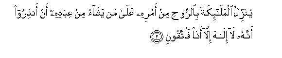
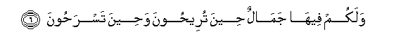
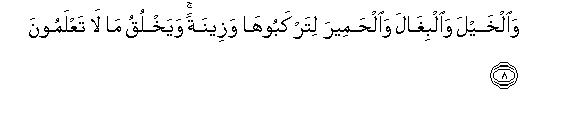
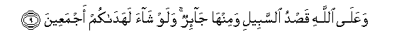

Sacred Texts Islam Index
Hypertext Qur'an Unicode Palmer Pickthall Yusuf Ali English Rodwell
Sūra XVI.: Naḥl or The Bee. Index
Previous Next

The Holy Quran, tr. by Yusuf Ali, [1934], at sacred-texts.com
Sūra XVI.: Naḥl or The Bee.
Section 1
1. Ata amru Allahi fala tastaAAjiloohu subhanahu wataAAala AAamma yushrikoona
1. (Inevitable) cometh (to pass)
The Command of God:
Seek ye not then
To hasten it: glory to Him,
And far is He above
Having the partners
They ascribe unto Him!

2. Yunazzilu almala-ikata bialrroohi min amrihi AAala man yashao min AAibadihi an anthiroo annahu la ilaha illa ana faittaqooni
2. He doth send down His angels
With inspiration of His Command,
To such of His servants
As He pleaseth, (saying):
"Warn (Man) that there is
No god but I: so do
Your duty unto Me."
3. Khalaqa alssamawati waal-arda bialhaqqi taAAala AAamma yushrikoona
3. He has created the heavens
And the earth for just ends:
Far is He above having
The partners they ascribe to Him!
4. Khalaqa al-insana min nutfatin fa-itha huwa khaseemun mubeenun
4. He has created man
From a sperm-drop;
And behold this same (man)
Becomes an open disputer!
5. Waal-anAAama khalaqaha lakum feeha dif-on wamanafiAAu waminha ta-kuloona
5. And cattle He has created
For you (men): from them
Ye derive warmth,
And numerous benefits,
And of their (meat) ye eat.

6. Walakum feeha jamalun heena tureehoona waheena tasrahoona
6. And ye have a sense
Of pride and beauty in them
As ye drive them home
In the evening, and as ye
Lead them forth to pasture
In the morning.
7. Watahmilu athqalakum ila baladin lam takoonoo baligheehi illa bishiqqi al-anfusi inna rabbakum laraoofun raheemun
7. And they carry your heavy loads
To lands that ye could not
(Otherwise) reach except with
Souls distressed: for your Lord
Is indeed Most Kind, Most Merciful

8. Waalkhayla waalbighala waalhameera litarkabooha wazeenatan wayakhluqu ma la taAAlamoona
8. And (He has created) horses,
Mules, and donkeys, for you
To ride and use for show;
And He has created (other) things
Of which ye have no knowledge.

9. WaAAala Allahi qasdu alssabeeli waminha ja-irun walaw shaa lahadakum ajmaAAeena
9. and unto God leads straight
The Way, but there are ways
That turn aside: if God
Had willed, He could have
Guided all of you.